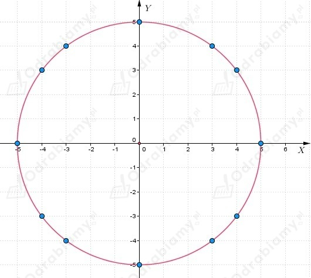
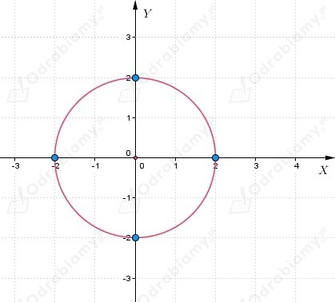
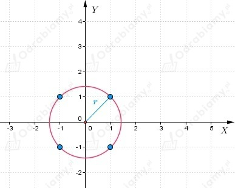
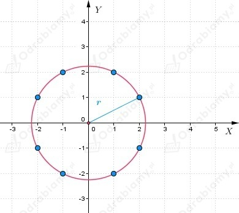

| Przypomnijmy, że okrąg o środku w początku układu współrzędnych i promieniu r>0 jest zbiorem wszystkich punktów płaszczyzny, których współrzędne (x, y) spełniają równanie
|
a)
Z treści zadania wiemy, że r=5.
Narysujmy okrąg w układzie współrzędnych.

Zatem równanie okręgu możemy zapisać następująco
Do tego okręgu należy 12 punktów o obu współrzędnych całkowitych:
b)
Z treści zadania wiemy, że r=2.
Narysujmy okrąg w układzie współrzędnych.

Zatem równanie okręgu możemy zapisać następująco
Do tego okręgu należą 4 punkty o obu współrzędnych całkowitych:
c)
Z treści zadania wiemy, że r=√2.
Narysujmy okrąg w układzie współrzędnych.

Zatem równanie okręgu możemy zapisać następująco
Do tego okręgu należą 4 punkty o obu współrzędnych całkowitych:
d)
Z treści zadania wiemy, że r=√5.
Narysujmy okrąg w układzie współrzędnych.

Zatem równanie okręgu możemy zapisać następująco
Do tego okręgu należy 8 punktów o obu współrzędnych całkowitych:
a)
Wiemy, że okrąg o środku w punkcie (0, 0) przechodzi przez punkt (0, 6).
Zatem podstawmy współrzędne punktu (0, 6) do równania
i dostaniemy
Zatem równanie okręgu możemy zapisać następująco
b)
Wiemy, że okrąg o środku w punkcie (0, 0) przechodzi przez punkt (-8, 0).
Zatem podstawmy współrzędne punktu (-8, 0) do równania
i dostaniemy
Zatem równanie okręgu możemy zapisać następująco
a)
Punkt P(5, -12) leży na okręgu ośrodku w punkcie O(0, 0).
Do równania okręgu
podstawiamy współrzędne punktu P (x=5, y=-12) i dostajemy
Czyli równanie okręgu ma postać
a jego promień r=13.
b)
Punkt P(-3, -3) leży na okręgu ośrodku w punkcie O(0, 0).
Do równania okręgu
podstawiamy współrzędne punktu P (x=-3, y=-3) i dostajemy
Czyli równanie okręgu ma postać
a jego promień r=3√2.
c)
Punkt P(-4, -5) leży na okręgu ośrodku w punkcie O(0, 0).
Do równania okręgu
podstawiamy współrzędne punktu P (x=-4, y=-5) i dostajemy
Czyli równanie okręgu ma postać
a jego promień r=√41.
d)
Punkt P(√3-1, √3+1) leży na okręgu ośrodku w punkcie O(0, 0).
Do równania okręgu
podstawiamy współrzędne punktu P (x=√3-1, y=√3+1) i dostajemy
Czyli równanie okręgu ma postać
a jego promień r=2√2.